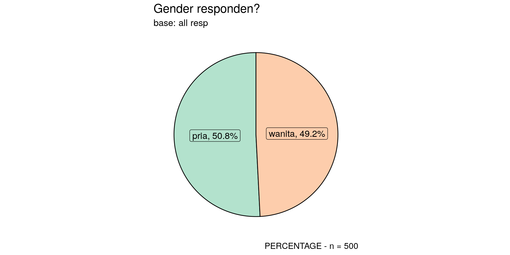

flowchart LR A[Raw Data] --> B(Data Prep) B --> C(expss) B --> D(dplyr janitor) C --> E[Tabulasi] D --> E E --> F[Saved to Excel] E --> G[Data Viz] G --> H[Saved to png/jpeg] G --> I[Report w/ markdown] I --> J[Full report] F --> K(Buat report pptx manual) H --> K
Reporting using R Studio
expss, dplyr, ggplot2, epoxy, dan quarto
ikanx101.com
Market Research Dept. Nutrifood
PENDAHULUAN
MASALAH
Apa Masalah Kita Tahun Ini?
Tujuan
- Mempercepat workflow pengerjaan report market riset.
- Saling sharing best practice pengerjaan report market riset.
- Tentunya menggunakan R atau R Studio.
Tahapan Workflow
Saya membagi flow kerja pembuatan report market riset sebagai berikut:
- Membuat tabulasi dengan
library(expss)ataulibrary(dplyr). - Membuat visualisasi dengan
library(ggplot2). - Membuat report dengan
quarto. - Membuat inline reporting dengan
library(epoxy).
Kenapa Harus Menggunakan R?
Silakan Install Libraries Berikut Ini
Install libraries dengan cara: install.packages("nama library").
Data yang Digunakan
Kita buat data sintetis sebagai berikut:
n_resp = 500
id = 1:n_resp
gender = sample(c("pria","wanita"),n_resp,replace = T)
usia = sample(c("< 15 th","16 - 20 th","21 - 25 th","26 - 30 th","> 30 th"),
n_resp,prob = c(.1,.2,.4,.2,2),replace = T)
usia = factor(usia,levels = c("< 15 th","16 - 20 th","21 - 25 th","26 - 30 th","> 30 th"))
aware = sample(c("ya","tidak"),prob = c(.3,.7),n_resp,replace = T)
tv_1 = sample(c(0,1),prob = c(.1,.9),n_resp,replace = T)
tv_2 = sample(c(0,1),prob = c(.3,.7),n_resp,replace = T)
tv_3 = sample(c(0,1),prob = c(.5,.5),n_resp,replace = T)
tv_4 = sample(c(0,1),prob = c(.7,.3),n_resp,replace = T)
tv_5 = sample(c(0,1),prob = c(.99,.01),n_resp,replace = T)
df = data.frame(id,gender,usia,aware,tv_1,tv_2,tv_3,tv_4,tv_5) %>%
mutate(tv_1 = ifelse(tv_1 == 1,"RCTI",NA),
tv_2 = ifelse(tv_2 == 1,"SCTV",NA),
tv_3 = ifelse(tv_3 == 1,"METRO",NA),
tv_4 = ifelse(tv_4 == 1,"INDOSIAR",NA),
tv_5 = ifelse(tv_5 == 1,"NET",NA))
df %>% head(15) %>%
knitr::kable(align = "c",caption = "Sample 15 Data Responden") %>%
kableExtra::kable_styling(font_size = 14)| id | gender | usia | aware | tv_1 | tv_2 | tv_3 | tv_4 | tv_5 |
|---|---|---|---|---|---|---|---|---|
| 1 | wanita | 21 - 25 th | tidak | RCTI | SCTV | NA | NA | NA |
| 2 | pria | 21 - 25 th | tidak | RCTI | SCTV | NA | NA | NA |
| 3 | wanita | > 30 th | tidak | RCTI | SCTV | NA | NA | NA |
| 4 | wanita | > 30 th | ya | RCTI | SCTV | NA | INDOSIAR | NA |
| 5 | wanita | > 30 th | tidak | RCTI | NA | NA | NA | NA |
| 6 | wanita | 21 - 25 th | tidak | RCTI | NA | NA | NA | NA |
| 7 | pria | 21 - 25 th | tidak | RCTI | SCTV | METRO | NA | NA |
| 8 | pria | > 30 th | tidak | RCTI | SCTV | METRO | NA | NA |
| 9 | pria | > 30 th | tidak | NA | SCTV | METRO | NA | NA |
| 10 | wanita | > 30 th | tidak | RCTI | SCTV | METRO | NA | NA |
| 11 | pria | 21 - 25 th | tidak | RCTI | SCTV | METRO | NA | NA |
| 12 | wanita | > 30 th | tidak | RCTI | NA | NA | INDOSIAR | NA |
| 13 | pria | > 30 th | tidak | RCTI | SCTV | METRO | NA | NA |
| 14 | wanita | > 30 th | ya | RCTI | SCTV | NA | NA | NA |
| 15 | wanita | > 30 th | tidak | RCTI | SCTV | METRO | INDOSIAR | NA |
Kita akan membuat report dari data di atas.
MEMBUAT TABULASI
library(expss)
Tabulasi Sederhana
Real number
Tabulasi Sederhana
Percentage
Tabulasi Sederhana
Real Number and Percentage
Tabulasi Sederhana
Real number
Crosstabulasi Sederhana
Percentage
| Crosstabulasi gender vs usia | ||||
|---|---|---|---|---|
| gender | #Total | |||
| pria | wanita | |||
| usia | ||||
| < 15 th | 3.1 | 2.0 | 2.6 | |
| 16 - 20 th | 5.1 | 6.1 | 5.6 | |
| 21 - 25 th | 13.4 | 12.2 | 12.8 | |
| 26 - 30 th | 9.4 | 6.5 | 8.0 | |
| > 30 th | 68.9 | 73.2 | 71.0 | |
| #Total cases | 254 | 246 | 500 | |
Crosstabulasi Sederhana
Percentage
Tabulasi Multiple Responses
Percentage
Crosstabulasi Multiple Responses
Percentage
| Crosstabulasi stasiun TV vs gender | ||||
|---|---|---|---|---|
| gender | #Total | |||
| pria | wanita | |||
| RCTI | 92.8 | 96.3 | 94.5 | |
| SCTV | 73.3 | 69.3 | 71.3 | |
| METRO | 48.6 | 47.5 | 48.1 | |
| INDOSIAR | 29.9 | 34.8 | 32.3 | |
| NET | 1.2 | 0.6 | ||
| #Total cases | 251 | 244 | 495 | |
Crosstabulasi Multiple Responses
Percentage dengan tambahan signifikansi
| Crosstabulasi stasiun TV vs gender | |||||
|---|---|---|---|---|---|
| gender | #Total | ||||
| pria | wanita | ||||
| A | B | ||||
| usia | |||||
| > 30 th | 68.9 | 73.2 | 71.0 | ||
| 21 - 25 th | 13.4 | 12.2 | 12.8 | ||
| 26 - 30 th | 9.4 | 6.5 | 8.0 | ||
| 16 - 20 th | 5.1 | 6.1 | 5.6 | ||
| < 15 th | 3.1 | 2.0 | 2.6 | ||
| #Total cases | 254 | 246 | 500 | ||
Crosstabulasi Multiple Responses dengan Filter Usia
tabel_10 =
df %>%
filter(aware == "ya") %>%
tab_cells(usia) %>%
tab_cols(gender,total()) %>%
tab_stat_cpct() %>%
tab_sort_desc() %>%
tab_last_sig_cpct() %>%
tab_pivot() %>%
tab_caption("Base: responden yang aware")
# Percentage dengan tambahan signifikansi: crosstabulasi stasiun TV vs gender
tabel_10| Base: responden yang aware | |||||
|---|---|---|---|---|---|
| gender | #Total | ||||
| pria | wanita | ||||
| A | B | ||||
| usia | |||||
| > 30 th | 64.9 | 79.7 | 71.7 | ||
| 21 - 25 th | 14.9 | 10.9 | 13.0 | ||
| 26 - 30 th | 10.8 | 3.1 | 7.2 | ||
| 16 - 20 th | 5.4 | 3.1 | 4.3 | ||
| < 15 th | 4.1 | 3.1 | 3.6 | ||
| #Total cases | 74 | 64 | 138 | ||
Save Into Excel File
# kita bikin workbook-nya
wb = createWorkbook()
# kita masukkan datanya
tabel_all = list(tabel_1,tabel_2,tabel_3,
tabel_4,tabel_5,tabel_6,
tabel_7,tabel_8,tabel_9)
# bikin sheet
nama_sheet = paste0("tabulasi all")
sh = addWorksheet(wb, nama_sheet)
# masukin semua tabel ke sheet tersebut
xl_write(tabel_all, wb, sh)
# export ke Excel
saveWorkbook(wb, "hasil tabulasi new.xlsx", overwrite = TRUE)Wrap Up!
Advantages
- Mirip syntax
SPSS. - Baik untuk uji statistik dan signifikansi langsung.
- Format tabel jika di-export ke
Ms. Excelterbaik.
Disadvantages
- Agak rumit untuk di-render langsung ke output
markdown. - Agak rumit untuk digabungkan ke skrip visualisasi
ggplot2.
library(dplyr) dan library(janitor)
Tabulasi Sederhana
Real number dan Percentage: Alternatif 1
Tabulasi Sederhana
Real number dan Percentage: Alternatif 2
Tabulasi Sederhana
Real number dan Percentage: Alternatif 3
Crosstabulasi Sederhana
Real number dan Percentage: Alternatif 1
# A tibble: 4 4
gender aware n persen
<chr> <chr> <int> <dbl>
1 pria tidak 180 70.9
2 pria ya 74 29.1
3 wanita tidak 182 74.0
4 wanita ya 64 26.0Crosstabulasi Sederhana
Real number dan Percentage: Alternatif 2
Crosstabulasi Sederhana
Real number dan Percentage: Alternatif 3
Tabulasi Multiple Responses
Real number dan Percentage
Tabulasi Multiple Responses
Real number dan Percentage
df %>%
select(id,gender,tv_1,tv_2,tv_3,tv_4,tv_5) %>%
melt(id.vars = c("id","gender")) %>%
filter(!is.na(value)) %>%
count(gender,value) %>%
group_by(gender) %>%
mutate(persen = n / nrow(df) * 100,
persen = round(persen,2)) %>%
ungroup() %>%
pivot_wider(names_from = gender, values_from = persen) %>%
adorn_totals() value n pria wanita
INDOSIAR 75 15.0 NA
METRO 122 24.4 NA
NET 3 0.6 NA
RCTI 233 46.6 NA
SCTV 184 36.8 NA
INDOSIAR 85 NA 17.0
METRO 116 NA 23.2
RCTI 235 NA 47.0
SCTV 169 NA 33.8
Total 1222 123.4 121.0Wrap Up!
Advantages
- Tidak ada uji statistik dan signifikansi secara langsung.
Disadvantages
- Bisa langsung render langsung ke output
markdownmenggunakanknitr. - Sangat mudah untuk digabungkan ke skrip visualisasi
ggplot2.
VISUALISASI
Pertanyaannya:
Lebih ribet gak sih harus bikin data viz pake library(ggplot2) ?
Jawabannya
Tergantung!
- Bisa jadi lebih cepat.
- Bisa jadi lebih lambat.
- TAPI:
- Untuk data yang selalu bertambah dan report yang berulang, pengerjaannya akan lebih cepat!
- Reproducibility!
Tips and Trick
Buat custom function!
Contoh
bikinin.pie.chart.dari.data.saya.donk=function(data,variabel,pertanyaan,sub.judul){
# bikin tabulasi
tabulasi=data %>% tab_cells(variabel) %>% tab_stat_cpct() %>% tab_pivot()
# merapikan tabulasi
tabulasi$dummy=strsplit(tabulasi$row_labels,'\\|')
for(i in 1:length(tabulasi$dummy))
{tabulasi$row_labels[i]=unlist(tabulasi$dummy[i])[2]}
tabulasi=data.frame(tabulasi)
tabulasi=tabulasi[-3]
colnames(tabulasi)=c('ket','percent')
tabulasi$percent=round(tabulasi$percent,2)
n = as.numeric(tabulasi %>% filter(grepl('total',ket,ignore.case=T)) %>%
summarise(n=sum(percent))) #ambil base buat kepentingan chart
tabulasi = tabulasi %>%
filter(!grepl('total',ket,ignore.case=T)) #tabulasi final untuk chart
tabulasi = tabulasi %>% filter(!is.na(ket))
# buat caption
if(n>30){
label_n=paste0(tabulasi$ket,
', ',
tabulasi$percent,'%')
caption_n = paste0('PERCENTAGE - n = ',n)
} else{
label_n=paste0(tabulasi$ket,', ',
round(tabulasi$percent*n/100,0),
' (',
tabulasi$percent,'%)')
caption_n = paste0('REAL NUMBER - n = ',n,', indikasi')
}
# buat visualisasi
ggplot(tabulasi,aes(x='',y=percent,fill=ket,label=label_n)) +
geom_bar(stat='identity',color = "black") +
coord_polar("y", start=0) +
scale_fill_brewer(palette="Pastel2") +
theme_minimal() +
theme(panel.grid=element_blank(),axis.title.y=element_blank(),
axis.title.x=element_blank(),legend.position = 'none',
plot.title = element_text(size=17),
plot.subtitle = element_text(size=13),
plot.caption=element_text(size=12),
axis.text.y = element_blank(),
axis.text.x = element_blank()) +
geom_label(position = position_stack(vjust = 0.5),size=4.5) +
labs(caption = caption_n) +
labs(title=pertanyaan,subtitle = sub.judul)
}
bikinin.pie.chart.dari.data.saya.donk(df,df$gender,"Gender responden?","base: all resp")
Contoh
REPORTING
Welcome to Quarto
Per Januari 2024 saya mengucapkan Goodbye to Xaringan.
Slides ini Dibuat dengan Quarto!
Features!
- Multiple formats; mulai dari presentation, pdf, books, web, manuscripts, dashboard, dan lain-lain.
- Multiple features! Bisa dicek di Quarto guides.
Inline Reporting Menggunakan library(epoxy)
Misalkan Data Summary
epoxy Demo
Kita bisa menuliskan skrip epoxy sebagai berikut:
Total responden yang telah diwawancara adalah sebesar {summary_df$n_resp}. Terdiri dari {summary_df$n_pria} orang responden pria dan {summary_df$n_wanita} orang responden wanita.
> Kita dapatkan {summary_df$n_aware} orang _aware_ terhadap iklan produk __X__ dari total {summary_df$n_resp} orang responden.Hasilnya adalah:
Total responden yang telah diwawancara adalah sebesar 500. Terdiri dari 254 orang responden pria dan 246 orang responden wanita.
Kita dapatkan 138 orang aware terhadap iklan produk X dari total 500 orang responden.
Another Example
| usia | tidak | ya |
|---|---|---|
| < 15 th | 8 | 5 |
| 16 - 20 th | 22 | 6 |
| 21 - 25 th | 46 | 18 |
| 26 - 30 th | 30 | 10 |
| > 30 th | 256 | 99 |
Kita bisa menuliskan:
#```{epoxy .data = summary_df}
1. Para responden {usia}, kita dapatkan {ya} orang _aware_ dan {tidak} orang _unaware_ terhadap iklan.Results
- Para responden < 15 th, kita dapatkan 5 orang aware dan 8 orang unaware terhadap iklan.
- Para responden 16 - 20 th, kita dapatkan 6 orang aware dan 22 orang unaware terhadap iklan.
- Para responden 21 - 25 th, kita dapatkan 18 orang aware dan 46 orang unaware terhadap iklan.
- Para responden 26 - 30 th, kita dapatkan 10 orang aware dan 30 orang unaware terhadap iklan.
- Para responden > 30 th, kita dapatkan 99 orang aware dan 256 orang unaware terhadap iklan.
TERIMA KASIH
Sebuah Learning Forum Market Riset